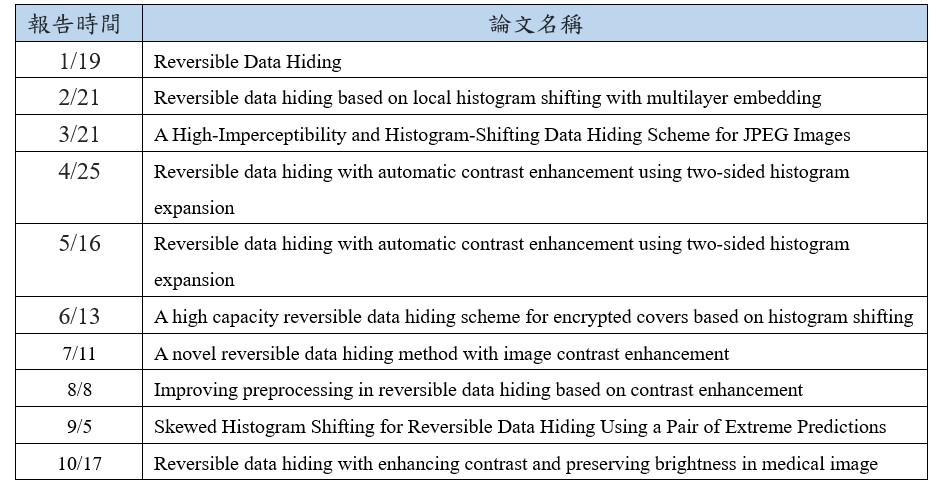

工作當中扮演的角色
因為教授只收個人專題，所以我是一個人做完主要工作，如寫程式、做報告，最後寫出論文，而一開始我完全沒有碰過影像這一塊，導致一開始學習得比較慢，也很多錯誤，但後面幾個月比較得心應手了。研究人員分別有兩位：

黃正達
指導教授
元智大學資訊學院英語學士班、資訊管理系助理教授
黃筑宣
學生
元智大學資訊管理系四年級學生
位於元智大學六館十樓
利用Teams或Google Meet進行開會
在前幾個月，教授讓我們去看幾篇要和研究主題有關的期刊論文，然後再請我們報告作者所研究出的新方法，報告結束後學長和教授會再利用引導的方式讓我們去思考要如何改進論文，進而想到自己的研究方向，這點我覺得跟其他教授較為不同，蠻多教授都是直接給主題請同學做，但正達教授是會激起我們的思考邏輯，同時因為是自己想的，使我們會更了解自己的方向跟動機，以下是我在開始實習至今所報告過的期刊論文：
表(一)、整學年的期刊論文報告
看與主題相關的期刊論文以及python、影像處理相關書籍，並實作其程式碼
每隔一個月要報告自己所讀的期刊文章，並從這些文章開始想自己的研究主題
將相法打成程式碼，確認自己的想法是否可行
將相關主題的方法和所提出的方法進行比較，並撰寫論文投稿到研討會
指導教授
元智大學資訊學院英語學士班、資訊管理系助理教授
學生
元智大學資訊管理系四年級學生